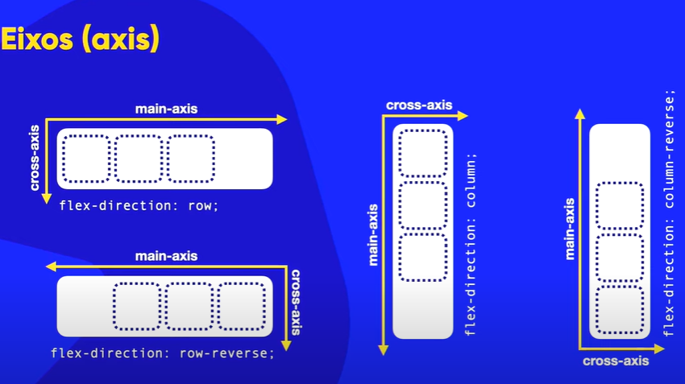

FlexBox
flex-direction
O comando flex-direction informa a direção que os itens serão organizados, por padrão a direção será: row, mas temos outros parametros como:
- row - alinha os itens em linha.
- row-reverse - alinha em linha mas os itens ficam revertido.
- column - alinha os itens em colunas.
- column-reverse - alinha em colunas mas os itens ficam revertido.
Eixos
Para entender um pouco melhor sobre eixos, analise a imagem abaixo.
flex-wrap
O comando flex-wrap defini se o conteúdo vai ficar agrupado ou não, por padrão o parametro será: nowrap, mas temos outros parametros como: